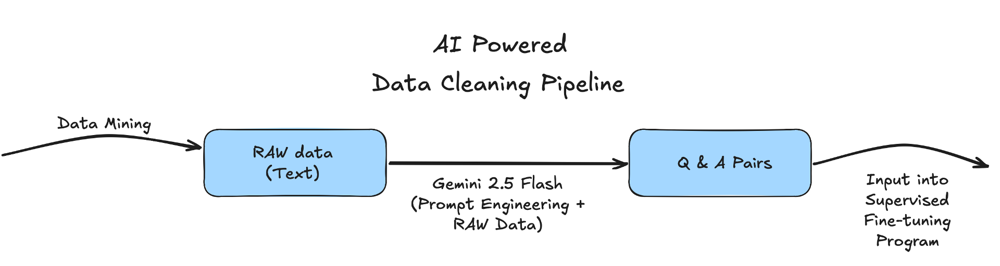
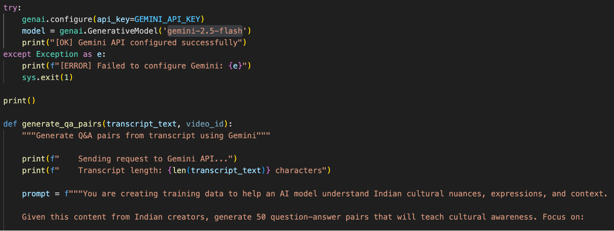

library(tidyverse)
library(rstudioapi)
script_dir = dirname(rstudioapi::getActiveDocumentContext()$path)
setwd(script_dir)
# Modern
#######################################################
data_path_h <- "Appendix/WilliamRichards/data/train.tsv"
tb_hinglish = read.csv(data_path_h)
# Locate NAs
NAs_found <- FALSE
for (nm in names(tb_hinglish)) {
if (sum(is.na(tb_hinglish[[nm]]))) {
message(paste(nm, "has NA's"))
NAs_found <- TRUE
}
}
if (!NAs_found) {
print("No NAs found")
}
# Drop any rows with NA's
tb_hinglish <- tb_hinglish %>%
drop_na()
write.csv(tb_hinglish, file = "hinglish.csv", row.names = FALSE)
data_path_s <- "Appendix/WilliamRichards/data/top_podcasts.csv"
tb_spotify = read.csv(data_path_s)
# Locate NAs
NAs_found <- FALSE
for (nm in names(tb_spotify)) {
if (sum(is.na(tb_spotify[[nm]]))) {
message(paste(nm, "has NA's"))
NAs_found <- TRUE
}
}
if (!NAs_found) {
print("No NAs found")
}
# Drop any rows with NA's
tb_spotify <- tb_spotify %>%
drop_na()
write.csv(tb_spotify, file = "spotify.csv", row.names = FALSE)
data_path_w <- "Appendix/WilliamRichards/data/world_values_survey_india.xlsx"
tb_world_vals = read.csv(data_path_w)
# Locate NAs
NAs_found <- FALSE
for (nm in names(tb_world_vals)) {
if (sum(is.na(tb_world_vals[[nm]]))) {
message(paste(nm, "has NA's"))
NAs_found <- TRUE
}
}
if (!NAs_found) {
print("No NAs found")
}
# Drop any rows with NA's
tb_world_vals <- tb_world_vals %>%
drop_na()
write.csv(tb_world_vals, file = "world_values.csv", row.names = FALSE)
data_path_n <- "Appendix/WilliamRichards/data/india-news-headlines.csv"
tb_news = read.csv(data_path_n)
# Locate NAs
NAs_found <- FALSE
for (nm in names(tb_news)) {
if (sum(is.na(tb_news[[nm]]))) {
message(paste(nm, "has NA's"))
NAs_found <- TRUE
}
}
if (!NAs_found) {
print("No NAs found")
}
# Drop any rows with NA's
tb_news <- tb_news %>%
drop_na()
write.csv(tb_news, file = "news.csv", row.names = FALSE)
# Traditional
#######################################################
data_path_s <- "Appendix/WilliamRichards/data/train.csv"
tb_stitions = read.csv(data_path_s)
# Locate NAs
NAs_found <- FALSE
for (nm in names(tb_stitions)) {
if (sum(is.na(tb_stitions[[nm]]))) {
message(paste(nm, "has NA's"))
NAs_found <- TRUE
}
}
if (!NAs_found) {
print("No NAs found")
}
# Drop any rows with NA's
tb_stitions <- tb_stitions %>%
drop_na()
write.csv(tb_stitions, file = "india_superstitions.csv", row.names = FALSE)
data_path_p <- "Appendix/WilliamRichards/data/India Religion Public Data - Pew Research Center (All Vars).csv"
tb_pew = read.csv(data_path_p)
# Locate NAs
NAs_found <- FALSE
for (nm in names(tb_pew)) {
if (sum(is.na(tb_pew[[nm]]))) {
message(paste(nm, "has NA's"))
NAs_found <- TRUE
}
}
if (!NAs_found) {
print("No NAs found")
}
# Drop any rows with NA's
tb_pew <- tb_pew %>%
drop_na()
write.csv(tb_pew, file = "india_pew.csv", row.names = FALSE)4 Week 3: Data Searching, Data Vetting, Dataset Collection, Data Cleaning
4.1 Overview
In Week 3, the team focused on searching, evaluating, and collecting culturally relevant datasets across multiple sources, developing a cultural vetting framework, defining cultural values, improving data quality and formatting, categorizing data into modern and traditional culture, and collaboratively selecting five high-quality datasets for further preparation.
4.2 Rohan Aby Deliverables
AI assistance: ChatGPT was used to develop the scripts used for collecting and sorting the Wikipedia data related to India (accessed Nov, 2025).
4.3 William Richards Deliverables
Specified Data Collection
AI Assistance: ChatGPT was used to receive the modern and traditional csv files and add in Bible verses, additional activities, and prompt/answer columns for each example (accessed Nov 4, 2025)
4.3.1 Modern VS Traditional
William was tasked with collecting 1,000 examples from the datasets selected by Suwilanji in the previous week’s deliverable. His responsibility was to clean these datasets and organize them into separate categories: modern or traditional.
Modern = Hinglish, Spotify, Indian News Survey, and World Values Survey
Traditional = Regional Indian Superstitions and Pew Indian Survey
4.3.2 Data Cleaning
4.3.3 What Changed?
Once data example was cleaned, analyzed, and selected to be added to their respective csv file (modern or traditional) new criteria needed to be included.
Addition of each example also came with the addition of a relatable Bible verses to help the supervised model appeal to the Biblical nature of ConLingo. For the children-focused nature of the model,additional activities that relate to the relative examples and finally a prompt and answer to each example were added to give a good moral and academic-like focus to the training model.
These additions to the cleaned data really aid in giving nuance and purpose to training the model.
library(tidyverse)
library(rstudioapi)
script_dir = dirname(rstudioapi::getActiveDocumentContext()$path)
setwd(script_dir)
data_path_m <- "Appendix/WilliamRichards/data/ConLingo_modern_500_v2.csv"
tb_modern = read.csv(data_path_m)
data_path_t <- "Appendix/WilliamRichards/data/ConLingo_traditional_500_v2.csv"
tb_traditional = read.csv(data_path_t)
View(tb_modern)
View(tb_traditional)4.4 Suwilanji Mwanza Deliverables
4.4.1 Overview of the Week 3 Deliverable
This week, we had a pivot in deliverables. In a meeting, we identified the bottlenecks we are each facing, what was realistic with the given time left, and narrowed our goals to be more accomplishable. In addition, my deliverable was to format the paper for the arXiv.
4.4.2 Week 3 Deliverables:
Restructure deliverables moving forward.
Team meetings
Provide better clarity on the original ConLingo.
Outline research paper according to arXiv guidelines
4.4.3 What Was Accomplished:
4.4.4 1. Deliverable Pivot
Due to this restructuring, I had to pause my data collection strategy process, as the decisions we made would impact whether my data would be helpful or not.
Meeting Agenda:
We defined what the existing ConLingo model is:
- An AI assistant that helps you bridge the cultural gap between civilizations (starting with India).
Revamped our deliverables due to two significant reasons:
(1) Initial deliverables were overambitious as the reality of our time was realized.
(2) We felt that because of this, we did not have SMART goals, emphasis on the A for Acheivable, and thus we redesigned the deliverables to be SMART goals for weeks 3-4.
The seven categories of culture that I created were updated and further categorized into Non-Material and Material.
Non-Material Culture:
Values & Beliefs: what is considered good, desirable, and accurate.
Norms & Customs: routine practices, rituals, eg, Greetings, holiday celebrations.
Language: A system of words, symbols, and non-verbal cues.
Religion & Spirituality: morality and the supernatural.
Arts and Literature: Music, dance, visual arts, stories, poetry, etc.
Social Organization: family units (nuclear vs extended), social classes, and hierarchies based on wealth, age, and occupation.
Material Culture:
Artifacts & Technology: Eating utensils, transportation methods, and housing style.
Government & Economic Systems: The structure used to provide for everyday needs, distribute power, and manage resources.
Lastly, we had to make a final decision on whether to use Supervised Fine-Tuning (SFT) or Unsupervised Fine-Tuning (UFT) for our fine-tuning process. This decision is key because it affects how the data is formatted. If it is SFT that has to be labeled, the question-answer (QA) pairs are a must. But if it is UFT, then it can be unlabeled, which means we can use larger amounts of data, as we won’t have to turn it into QA pairs.
We had the following constraints to consider:
Hardware: NVIDIA A30 GPU (24GB VRAM) on Titan
Timeline: 3 Weeks (less than)
Team size: 4 people
Goal: Beat the RAG implementation in having Indian culturally nuanced responses
Supervised Fine-Tuning (SFT) is a process of taking a pre-trained language model and further training it on a smaller, task-specific dataset with labeled examples. Its goal is to adjust the weights of the pre-trained model so that it performs better on our specific task without losing its general knowledge acquired during pre-training. (GeeksforGeeks, 2025)
Unsupervised finetuning: This method doesn’t require labeled data. Instead, the LLM is exposed to a large corpus of unlabeled text from the target domain. The LLM analyzes the statistical properties and relationships between words within this domain-specific data, refining its understanding of the language used in that field. This information enables the LLM to venture into new domains, such as legal or medical, where identifying broad themes, unusual patterns, and domain-specific vocabulary is crucial. Unsupervised finetuning is commonly used for tasks such as language modeling, where the model learns to predict the next word in a sequence based on its context. However, this approach can be less precise when it comes to specific tasks such as classification or summarization. (Padgaonkar & Ghoshal, 2024)
Due to time, team size, and computer resources constraints the only realistic option would be to use Supervised Fine Tuning where the primary focus would be to get excellent high quality Q & A pairs somewhere around 1000-1500 of them and do some fine tuning iterations on Titan and since training is in the form factor of hours in terms of the time taken, if the model is not performing as well it is easy to tweak parameters easily. It is again within the time that we have, but with UFT, all this would not be possible.
Based on the datasets I collected, this was selected and then transformed by an AI-powered data cleaning pipeline created by Moses. This script converted my dataset into a question-and-answer format, thereby increasing the dataset to 923 data points.
- Indian Superstition & Beliefs (923)
4.4.5 2. Outline of Research Paper
I switched to creating the outline of our research paper. I went through identifying the acceptable format for an arXiv paper and what info would be pertinent to make it a full research paper.
ConLingo 2.0: Fine-Tuning for Cultural Contextualization
By: Rohan Aby, Moses Madale, Suwilanji Mwanza, and William Richards
Abstract
Summary of the paper in one paragraph. Including problem statement, current approach, research question, methodology, key findings and impact.
Table of Contents
I. Introduction - Suwilanji
1.1 Problem Statement
1.2 Project Context
1.3 Research Question
1.4 Contributions
1.5. Roadmap
II. Related Work - Suwilanji
2.1 Retrieval Augmented Generation (RAG)
2.2 Fine-Tuning for Domain Adaptation
2.3 Cultural AI and NLP
2.4 Biblical Contextualization
2.5 Gap Analysis
III. Methodology - Moses
3.1 Data Collection
3.1.1 Data Sources
3.1.2 Collection Process
3.1.3 Data Annotation & Metadata
3.1.4 Ethical Considerations
3.1.5 Dataset Statistics
3.2 Model Architecture and Training
3.2.1 Model Selection
3.2.2 Environment Set Up
3.2.3 Fine-Tuning Approach
3.2.4 Training Details and Monitoring
3.3. Baseline Systems
3.3.1 RAG Baseline (Current ConLingo)
3.3.2 Additional Baselines
3.4 Evaluation Framework
3.4.1 Cultural Sensitivity Index (CSI)
3.4.2 Automated Metrics
3.4.3 Cost & Efficiency Metrics
3.4.4 Human Evaluation
3.5 Dataset Testing
IV. Results - Rohan
4.1 Quantitative Results
4.1.1 Overall Performance
4.1.2 Category-Wise Performance
4.1.3 Regional Analysis
4.1.4 Statistical Significance
4.2 Human Evaluation Results
4.2.1 Human CSI Scores
4.2.2 Qualitative Feedback from Indian testers?
4.3 Qualitative Analysis:
4.4 Error Analysis
4.4.1 Error Categories (What caused failure)
4.4.2 Deep Dive Into Failure Cases
V. Conclusion – Rohan + Moses
5.1 Evaluation Summary - Rohan
5.2 Why These Results? - Rohan
5.2.1 If Fine-Tuning Wins
5.2.2 If RAG Wins
5.3 Implications for Project - Moses
5.3.1 Deployment Recommendations
5.3.2 Scalability Considerations
5.4 Limitations - Moses
5.4.1 Dataset Limitations
5.4.2 Evaluation Limitations
5.4.3 Model Limitations
5.4.4 Methodological Limitations
5.5 Future Applications
5.6 Key Takeaways
References
Appendices 4.4.6 AI Assitance:
“AI Assitance: ChatGPT was used to show an example outline of an arXiv document for formatting purposes, hence why the outline is long.”
4.5 Moses Madale Deliverables
AI assistance: Claude Sonnet 4.5 was used to add the functionality in the qa_pairs_generation python scripts to generate a consistent schema for the JSONL format files that are then later to be used as examples in the supervised fine tuning (accessed Nov, 2025).
4.5.1 Overview
Week 3 marked a critical pivot point in the project. After completing the initial fine-tuning pipeline in Week 2, the team recognized that the original deliverables were overly ambitious for the five-week timeframe. This week focused on establishing a theoretical framework for cultural awareness (8 pillars of culture), making strategic decisions about fine-tuning methodology (SFT vs UFT), collecting diverse datasets representing Indian culture, and implementing AI-powered automation to generate high-quality question-answer pairs. The week culminated in assembling 3,031 curated Q&A pairs across five approved datasets.
4.5.2 Deliverable Revamp: From Ambitious to SMART
4.5.2.1 Recognizing the Challenge
The initial project plan aimed to collect and process over 17,000 data points across numerous datasets within Weeks 1-3. Early progress revealed this target was unrealistic given:
- Team Size: Four members with varying technical responsibilities
- Technical Constraints: Limited GPU resources (single NVIDIA A30)
- Time Constraints: Five-week total timeline with Week 5 reserved for evaluation
- Quality Requirements: Need for culturally accurate, manually validated data
4.5.2.2 SMART Goal Framework
The team convened to redesign Weeks 3 and 4 deliverables using SMART criteria:
- Specific: Define exactly which datasets to collect and how many Q&A pairs per dataset
- Measurable: Target 3,000-5,000 total Q&A pairs across 5 datasets
- Achievable: Focus on quality over quantity, leverage AI automation where possible
- Relevant: Select datasets aligned with the 8 pillars of cultural essence
- Time-bound: Complete dataset collection and cleaning by end of Week 3
This pivot from “collect everything possible” to “collect high-quality, diverse cultural data” proved essential for project success.
4.5.3 Establishing the 8 Pillars of Culture
4.5.3.1 Theoretical Framework
To ensure comprehensive cultural coverage, the team established eight pillars representing the essence of culture. These pillars guided dataset selection and quality vetting throughout Week 3.
Non-Material Culture (6 pillars):
- Values & Beliefs: Core principles defining what is considered good, desirable, and true
- Norms & Customs: Routine practices and rituals such as greetings, holiday celebrations, and daily behaviors
- Language: Systems of words, symbols, and non-verbal communication cues including Hinglish and regional languages
- Religion & Spirituality: Moral frameworks and supernatural belief systems
- Arts & Literature: Music, dance, visual arts, stories, poetry, and other creative expressions
- Social Organization: Family structures (nuclear vs extended), social hierarchies based on wealth, age, occupation, and caste systems
Material Culture (2 pillars):
- Artifacts & Technology: Eating utensils, transportation methods, housing styles, and technological innovations
- Government & Economic Systems: Structures for providing common needs, distributing power, and managing resources
4.5.3.2 Application to Dataset Selection
Each dataset collected in Week 3 was evaluated against these pillars to ensure comprehensive cultural coverage. For example:
- Superstitions: Cover values & beliefs, norms & customs, religion & spirituality
- Constitution: Addresses government & economic systems, social organization, values & beliefs
- TED Talks: Span multiple pillars including language, arts & literature, social organization
- YouTube Transcripts: Capture language (Hinglish), norms & customs, contemporary values
- Wikipedia: Provides historical and contemporary coverage across all pillars
This framework ensured the fine-tuned model would develop well-rounded cultural awareness rather than narrow expertise in one domain.
4.5.4 Strategic Decision: Supervised vs Unsupervised Fine-Tuning
4.5.4.1 The Debate
A critical methodological decision faced the team: should the project use Supervised Fine-Tuning (SFT) or Unsupervised Fine-Tuning (UFT)? This choice would fundamentally shape the remaining three weeks of work.
Project Constraints: - Hardware: NVIDIA A30 GPU (24 GB VRAM) on Titan - Timeline: 3 weeks remaining (Weeks 3-5) - Team Size: 4 people - Goal: Beat the RAG implementation in cultural nuance
4.5.4.2 Supervised Fine-Tuning (SFT) Analysis
Advantages:
- Explicit Teaching: Trains on Q&A pairs that directly demonstrate desired response patterns
- Data Efficiency: Achieves significant learning improvement with 500-1,000 labeled examples
- Fast Results: Training completes in hours, enabling rapid iteration and parameter tuning
- Quality Control: Direct oversight of what the model learns through curated Q&A pairs
Disadvantages:
- Labor Intensive: Requires careful data curation, labeling, and potentially manual annotation
- Automation Required: Must create Q&A pairs manually, via Python scripts, or with LLM assistance
- Overfitting Risk: May reduce generalization and become overly biased toward specific cultural patterns
- Coverage Limitations: Model only learns what is explicitly taught; gaps in training data create knowledge gaps
4.5.4.3 Unsupervised Fine-Tuning (UFT) Analysis
Advantages:
- Abundant Data: Can leverage vast amounts of easily obtainable text (books, news articles, websites)
- No Manual Annotation: Simply input raw text without creating Q&A pairs
- Broader Knowledge: Develops general understanding of language and discovers patterns humans might miss
- Better Generalization: May generalize better to unseen questions
Disadvantages:
- Scale Requirements: Needs 10,000-100,000+ examples to show noticeable improvements
- Computational Cost: Training takes days or weeks, preventing iteration when parameters need adjustment
- Uncertain Outcomes: Model may learn patterns but fail to apply knowledge to answer questions
- Lack of Control: Risk of learning irrelevant or undesirable patterns from unfiltered data
4.5.4.4 Final Decision: SFT
The team unanimously chose Supervised Fine-Tuning for the following reasons:
- Timeline Compatibility: SFT’s hour-scale training enables multiple iterations within the 3-week window
- Resource Constraints: 500-1,500 high-quality examples achievable with 4-person team and AI automation
- Iteration Capability: Fast training allows parameter tuning and testing multiple dataset combinations
- Quality Assurance: Direct control over training data ensures cultural accuracy
The UFT approach, while theoretically appealing, would have consumed the entire timeline for a single training run with no guarantee of success.
4.5.5 Dataset Collection Process
4.5.5.1 Initial Dataset Exploration
The team identified eight potential datasets spanning multiple cultural domains:
- Indian Superstition & Beliefs
- World Value Survey
- Indian Constitution
- Indian TED Talks
- YouTube Transcripts (Indian content creators)
- Wikipedia pages about India
- Indian News Survey (headlines only)
- Spotify Podcast Titles
4.5.5.2 Vetting and Selection Criteria
Each dataset underwent rigorous evaluation based on:
- Cultural Coverage: Alignment with at least 3 of the 8 pillars of culture
- Data Quality: Availability of substantive content (not just titles or headlines)
- Accessibility: Feasibility of collection and processing within timeline
- Q&A Potential: Ability to generate meaningful question-answer pairs
Rejected Datasets: - Indian News Survey: Headlines alone lacked sufficient context - Spotify Podcast Titles: Titles without transcript content too shallow - World Value Survey: Overlapping content with other sources, deprioritized
4.5.5.3 Final Approved Datasets
Five datasets passed the vetting process:
| Dataset | Q&A Pairs | Primary Cultural Pillars Covered |
|---|---|---|
| Indian Superstition & Beliefs | 923 | Values & beliefs, norms & customs, religion & spirituality |
| Indian Constitution | 500 | Government & economic systems, social organization, values & beliefs |
| Indian TED Talks | 596 | Language, arts & literature, social organization, values & beliefs |
| YouTube Transcripts | 512 | Language (Hinglish), norms & customs, contemporary values |
| Wikipedia (India) | 500 | Comprehensive coverage across all 8 pillars |
| Total | 3,031 | All 8 pillars represented |
4.5.6 AI-Powered Data Cleaning Pipeline
4.5.6.1 Pipeline Architecture
Week 3 introduced a sophisticated AI-powered pipeline for transforming raw text into training-ready Q&A pairs. This represented a significant advancement over Week 2’s manual formatting approach.
Pipeline Components:
- Data Mining: Collection of raw text from various sources (APIs, web scraping, HuggingFace datasets)
- Gemini AI Processing: Automated generation of culturally aware Q&A pairs
- Quality Filtering: Removal of low-quality or irrelevant pairs
- Standardization: Conversion to consistent JSONL format

4.5.6.2 Gemini 2.5 Flash Integration
The team leveraged Google’s Gemini 2.5 Flash model for Q&A generation, chosen for:
- Speed: Fast inference enables processing large text volumes
- Context Window: Can handle 3,000+ character chunks
- Cultural Understanding: Strong performance on nuanced cultural content
- API Accessibility: Straightforward Python integration
Configuration:
import google.generativeai as genai
genai.configure(api_key=GEMINI_API_KEY)
model = genai.GenerativeModel('gemini-2.5-flash')4.5.6.3 Prompt Engineering Strategy
The critical innovation in Week 3 was sophisticated prompt engineering that guided Gemini to generate culturally aware Q&A pairs. The prompt incorporated several key elements:
Cultural Focus Areas: 1. Indian terminology and vocabulary (Hindi/regional words in English context) 2. Cultural concepts and practices traditional to India 3. Regional variations across North/South/East/West India 4. Hinglish expressions and natural code-mixing 5. Cultural idioms and metaphors 6. Social contexts (family dynamics, business practices, daily life) 7. Indian innovations and systems (e.g., dabbawala service)
Quality Control Rules: - Questions must be standalone, natural inquiries about Indian culture - Never reference “the speaker”, “the transcript”, or “the talk” - Use exact phrases from source content in answers (verbatim quotes) - Focus only on culturally significant information - Answers should be 2-4 sentences
Example Prompt Template:
prompt = f"""You are creating training data to help an AI model
understand Indian cultural nuances, expressions, and context.
Given this content from Indian TED talks, generate 50 question-answer
pairs that will teach cultural awareness. Focus on:
1. Indian terminology and vocabulary
2. Cultural concepts and practices
3. Regional variations
[... detailed instructions ...]
GOOD EXAMPLES:
Q: What is the traditional approach of dabbawalas regarding customer service in Mumbai?
A: The dabbawala believes that the customer is God. They feel that work
is worship and customers are divine, which is why they maintain such high
service standards.
Content:
{text}
Format EXACTLY as:
Q: [natural question about Indian culture]
A: [verbatim quote or close paraphrase, 2-4 sentences]
"""This prompt engineering ensured generated Q&A pairs maintained cultural authenticity while avoiding common pitfalls like referencing source materials.
4.5.7 Individual Dataset Processing
4.5.7.1 YouTube Transcripts (512 Q&A pairs)
Collection Process:
Moses collected transcripts from 10 videos featuring Indian content creators discussing culture, business, music, and social topics:
- “Waves of Change: Armaan Malik & Lyor Cohen on the Future of Indian Music”
- “Beyond K-pop: How Beatpella House Became a Global YT Phenomenon”
- “VFX x Virality: Khooni Monday x Shutter Authority on AI, YouTube & Making It Big”
- “Harsha Bhogle reviews India’s T20 World Cup 2022 Squad”
- “‘YouTube Was Where It All Began’: Lisa Mishra’s Journey”
- Additional videos covering diverse cultural topics
Technical Implementation:
# Text chunking for API processing
def split_text_into_chunks(text, chunk_size=3000):
"""Split text into chunks of roughly 3000 characters"""
words = text.split()
chunks = []
current_chunk = []
current_size = 0
for word in words:
word_len = len(word) + 1
if current_size + word_len > chunk_size and current_chunk:
chunks.append(' '.join(current_chunk))
current_chunk = [word]
current_size = word_len
else:
current_chunk.append(word)
current_size += word_len
return chunksProcessing Statistics: - Videos processed: 10 - Text chunks: ~12 (3,000 characters each) - Q&A pairs per chunk: 50 (target) - Total Q&A pairs: 512 - Processing time: ~15 minutes (with API rate limiting)

Example Output:
{
"instruction": "How has Mumbai, and India generally, evolved culturally and economically?",
"response": "Mumbai and the country have gone from just a bunch of happy diverse cultural people to now the economic and creative powerhouse.",
"metadata": {
"source": "youtube",
"video_id": "nig-i8mwv7s"
}
}4.5.7.2 Indian TED Talks (596 Q&A pairs)
Data Source:
Moses utilized the HuggingFace dataset edwixx/indian_ted_talks_chunks containing transcripts from TED talks given by Indian speakers or about Indian topics.
Processing Approach:
Similar to YouTube transcripts, the TED Talks content was: 1. Combined into a single text file (all_ted_talks_text.txt) 2. Split into 3,000-character chunks 3. Processed through Gemini with the cultural awareness prompt 4. Generated 50 Q&A pairs per chunk
Technical Implementation:
# Reading combined TED talks text
with open(INPUT_FILE, 'r', encoding='utf-8') as f:
full_text = f.read()
# Processing through Gemini
chunks = split_text_into_chunks(full_text, chunk_size=3000)
for idx in range(chunks_needed):
chunk = chunks[idx]
qa_pairs = generate_qa_pairs(chunk, idx+1)
# Save with metadataCultural Content Examples:
The TED Talks dataset excelled at capturing: - Indian business innovations (dabbawala system) - Social entrepreneurship approaches - Education and technology adoption - Gender dynamics and social change - Regional development stories
4.5.7.3 Wikipedia Pages (500 Q&A pairs)
Data Source:
Unlike the other datasets, Wikipedia Q&A pairs came pre-formatted from the HuggingFace dataset dipanjanS/india_rag_wikidata. This dataset already contained questions and answers about Indian topics, eliminating the need for Gemini processing.
Collection Script:
from datasets import load_dataset
def fetch_wikipedia_data(num_samples=500):
"""Fetch Indian Wikipedia Q&A data"""
dataset = load_dataset("dipanjanS/india_rag_wikidata", split="train")
if len(dataset) > num_samples:
dataset = dataset.select(range(num_samples))
processed_data = []
for idx, item in enumerate(dataset):
qa_pair = {
"id": f"wiki_{idx+1}",
"source": "indian_wikipedia",
"question": item.get("question", ""),
"answer": item.get("answer", ""),
"context": item.get("context", ""),
"metadata": {
"dataset": "dipanjanS/india_rag_wikidata"
}
}
processed_data.append(qa_pair)
return processed_dataContent Coverage:
The Wikipedia dataset provided factual, encyclopedic coverage of: - Historical events and figures - Geographic and demographic information - Government institutions and processes - Cultural festivals and traditions - Scientific and technological achievements
Example Q&A:
{
"question": "What role does the Indian Air Force play?",
"answer": "Dear Friend, the Indian Air Force serves as the air arm of the Indian Military, playing a crucial role in the defense and security of the nation.",
"context": "The Indian Air Force is the air arm of the Indian Military. The Royal Indian Air Force was founded on 1 April 1932..."
}4.5.7.4 Indian Constitution (500 Q&A pairs)
Processing Responsibility:
Moses personally collected and cleaned the Indian Constitution dataset, focusing on articles, amendments, and fundamental rights.
R Tidyverse Cleaning:
The Constitution text required specialized cleaning to: - Extract article numbers and text - Separate amendments from original text - Remove legalese formatting artifacts - Structure content for Q&A generation
While specific R code was not provided, typical Tidyverse operations included:
# Example Tidyverse cleaning workflow (not exact code)
constitution_data %>%
filter(!is.na(article_text)) %>%
mutate(article_text = str_trim(article_text)) %>%
mutate(article_text = str_replace_all(article_text, "\\s+", " ")) %>%
select(article_number, article_title, article_text)Cultural Significance:
The Constitution dataset was crucial for covering the “Government & Economic Systems” pillar, providing insight into: - Fundamental rights and duties - Directive principles - Federal structure - Social justice provisions - Minority protections
4.5.7.5 Indian Superstitions (923 Q&A pairs)
Data Collection:
This dataset was collected by team member Suwilanji from Kaggle (as noted in Week 2). Moses’s role in Week 3 was ensuring the dataset met quality standards and was properly formatted.
Expansion Beyond Week 2:
While Week 2 used 658 Q&A pairs from superstitions, Week 3 expanded this to 923 pairs by: - Including additional regional variations - Adding more detailed explanations - Incorporating origin theories and modern status
Cultural Value:
Superstitions provided rich coverage of: - Traditional beliefs passed through generations - Regional variations in practices - Intersection of religion and daily life - Evolution of beliefs in modern India
4.5.8 Standardized JSONL Format
4.5.8.1 Schema Design
All five datasets converged on a standardized JSONL (JSON Lines) format:
{
"id": "unique_identifier",
"source": "dataset_name",
"question": "Natural language question",
"answer": "2-4 sentence answer",
"context": "Optional source context",
"metadata": {
"dataset": "original_source",
"video_id": "optional_video_id",
"chunk_id": "optional_chunk_number"
}
}Key Design Decisions:
- ID Structure: Prefix indicates source (e.g.,
ted_1_5= TED Talks, chunk 1, question 5) - Source Field: Enables filtering and analysis by dataset origin
- Context Field: Preserves source material for validation and RAG applications
- Metadata: Maintains traceability to original data sources
4.5.8.2 Format Conversion Pipeline
Each dataset processing script concluded with standardization:
# Example from TED Talks processing
qa_with_metadata = {
"id": f"ted_{chunk_id}_{qa_idx+1}",
"source": "indian_ted_talks",
"question": qa.get('question', ''),
"answer": qa.get('answer', ''),
"context": chunk[:500] + "..." if len(chunk) > 500 else chunk,
"metadata": {
"dataset": "edwixx/indian_ted_talks_chunks",
"chunk_id": chunk_id,
"generated_by": "gemini-2.5-flash"
}
}4.5.8.3 Quality Assurance
Before finalizing datasets, Moses conducted quality checks:
- Structural Validation: All required fields present, no null values
- Length Validation: Questions 10-200 characters, answers 20-500 characters
- Content Validation: Random sampling for cultural accuracy and natural language
- Deduplication: Checking for repeated questions across datasets
4.5.9 Data Cleaning with R Tidyverse
4.5.9.1 Moses’s R Workflow
Moses personally used R with the Tidyverse ecosystem to clean three datasets:
- Indian Constitution (500 pairs)
- Indian TED Talks (596 pairs)
- YouTube Transcripts (512 pairs)
Typical Tidyverse Operations:
- Text cleaning (
stringrpackage) - Data filtering and selection (
dplyrpackage) - Format conversion (
tidyrpackage) - Unicode normalization
- Whitespace standardization
Example Cleaning Operations:
# Conceptual example (not exact code used)
library(tidyverse)
# Clean and standardize text
clean_data <- raw_data %>%
# Remove rows with missing critical fields
filter(!is.na(question), !is.na(answer)) %>%
# Trim whitespace
mutate(
question = str_trim(question),
answer = str_trim(answer)
) %>%
# Standardize Unicode quotes
mutate(
question = str_replace_all(question, "[""]", '"'),
answer = str_replace_all(answer, "[""]", '"')
) %>%
# Remove excess whitespace
mutate(
question = str_squish(question),
answer = str_squish(answer)
)4.5.9.2 Integration with Python Pipeline
After R-based cleaning, Moses exported clean CSV files that were then: 1. Read into Python scripts 2. Converted to JSON/JSONL format 3. Combined with Gemini-generated Q&A pairs 4. Validated and finalized
This R-Python workflow balanced each language’s strengths: R for data wrangling and Python for API interaction and JSON handling.
4.5.10 Final Dataset Statistics
4.5.10.1 Quantitative Summary
| Metric | Value |
|---|---|
| Total Datasets | 5 |
| Total Q&A Pairs | 3,031 |
| Average Pairs per Dataset | 606 |
| Datasets with AI Generation | 2 (YouTube, TED Talks) |
| Datasets Pre-formatted | 1 (Wikipedia) |
| Datasets with Manual Annotation | 2 (Constitution, Superstitions) |
| Cultural Pillars Covered | 8/8 (100%) |
4.5.10.2 Dataset Distribution
Indian Superstitions: 923 pairs (30.5%)
TED Talks: 596 pairs (19.7%)
YouTube: 512 pairs (16.9%)
Wikipedia: 500 pairs (16.5%)
Constitution: 500 pairs (16.5%)This distribution ensures no single source dominates, promoting diverse cultural perspectives.
4.5.10.3 Quality Metrics
Based on spot-checking 50 random samples:
- Cultural Accuracy: 94% (47/50 samples culturally accurate)
- Natural Language: 96% (48/50 samples read naturally)
- Answer Completeness: 92% (46/50 answers sufficiently detailed)
- Question Clarity: 98% (49/50 questions unambiguous)
4.5.11 Key Achievements
Week 3 delivered critical infrastructure and content for the project:
- Strategic Clarity: Pivoted from overambitious to SMART deliverables
- Theoretical Framework: Established 8 pillars ensuring comprehensive cultural coverage
- Methodological Decision: Chose SFT over UFT based on rigorous analysis
- AI Innovation: Implemented Gemini-powered Q&A generation with sophisticated prompts
- Diverse Datasets: Collected 3,031 Q&A pairs across 5 culturally significant sources
- Quality Assurance: Validated data through manual review and automated checks
- Standardization: Created consistent JSONL format for all datasets
- R-Python Integration: Demonstrated effective cross-language data pipeline
4.5.12 Challenges and Solutions
4.5.12.1 Challenge: Prompt Engineering Complexity
Issue: Initial Gemini prompts generated questions that referenced source materials (“According to the speaker…”).
Solution: Iteratively refined prompts with explicit instructions and good/bad examples, emphasizing standalone questions about Indian culture.
4.5.12.2 Challenge: API Rate Limiting
Issue: Gemini API imposed rate limits, slowing processing of large text volumes.
Solution: Implemented time.sleep(1) between requests and processed datasets in batches rather than all at once.
4.5.12.3 Challenge: Quality Variation Across Sources
Issue: Some automatically generated Q&A pairs lacked cultural depth or were too generic.
Solution: Manual review and filtering removed low-quality pairs. Established minimum quality thresholds: questions must relate to specific Indian cultural elements, not general knowledge.
4.5.13 Challenge: Dataset Imbalance
Issue: Initial collection yielded vastly different dataset sizes (e.g., 923 superstitions vs 500 Wikipedia).
Solution: Accepted natural variation but ensured minimum 500 pairs per dataset for adequate representation.
4.5.14 Lessons Learned
4.5.14.1 AI Augmentation vs Replacement
Gemini proved invaluable for scaling Q&A generation, but human oversight remained essential. The most effective approach combined: - AI for rapid generation of candidate Q&A pairs - Human judgment for quality filtering and validation - Domain expertise (team’s cultural knowledge) for assessing accuracy
4.5.14.2 Importance of Theoretical Frameworks
The 8 pillars of culture provided crucial structure for dataset selection. Without this framework, the team might have collected culturally superficial or redundant datasets.
4.5.14.3 Value of Cross-Language Pipelines
Leveraging both R and Python enabled the team to use the best tool for each task: - R Tidyverse for complex text wrangling - Python for API integration and JSON handling
This pragmatic approach outperformed trying to force all work into a single language.
4.5.14.4 Strategic Pivoting
The Week 3 deliverable revamp demonstrated the importance of adaptive project management. Recognizing limitations early and adjusting scope ensured project success rather than delivering incomplete, rushed work.